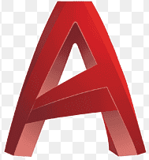
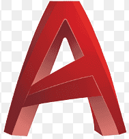

Lenguajes de Programacion💻:


Herramientas y Frameworks🛠️:


Diseño & UX/UI🖌️:

 

Sistema "Tecnico"
Llamado asi por los sistemas que tengo para aplicar a mis objetivos "tecnicos" , en donde planeo seguir aumentando mi conocimiento y habilidades. Ya que me apasiona aprender de todo. Siempre Mas. Caminando hacia el Futuro.
Soft-Skills
Estas son algunas de las Soft-kills que considero por criterio propio , en donde frente a experiencias , proyectos, forma de ser , considero que forme estas Skills.
Es para mi muy importante el trabajar en equipo , ya que con un equipo en donde se direccione los mismos intereses y un excelente clima laboral , se llega muy lejos! La union hace la fuerza!
Considero que tengo la capacidad de escuchar , guiar y adaptar a personas para lograr objetivos mediante sistemas , motivacion y empatia. Y tomar iniciativa en momentos claves para asumir responsabilidades con compromiso.
Me gusta ser desafiado y por ende, resolver problemas. Creo que el ser humano trabaja y es mas "humano"siendo desafiado , resolviendo problemas , pensando. Y cuando me refiero adaptabilidad , hago referencia a buscar Siempre la solucion a cualquier problema, dando lo mejor.
Es importante para mi el ser una persona abierta , que abraza el cambio y va de la mano con la adaptabilidad , ya que se necesita de una buena comunicacion para resolver , proyectar o dirijir cualquier desafio. Es por eso que uno de mis pasatiempos favoritos es Leer.
Soy una persona con una fuerte disciplina en la organizacion ya que me gusta trabajr en un espacio ordenado , considero que el orden es clave para el orden mental , tambien puntual porque es una forma de respeto hacia la persona o Trabajo el ser puntual y junto a estas dos sumo Metodico , como ingeniero Industrial me gusta seguir un orden o "metodo" para alcanzar objetivos.
Desde muy chico fui creativo , es por eso que estudie en una Secundaria Tecnica ya que me gustaba arreglar , diseñar y crear cosas. Al dia de hoy me encanta pensar y crear soluciones , proyectos de maneras creativas y disruptivas. Soy una persona creativa con grandes sueños.